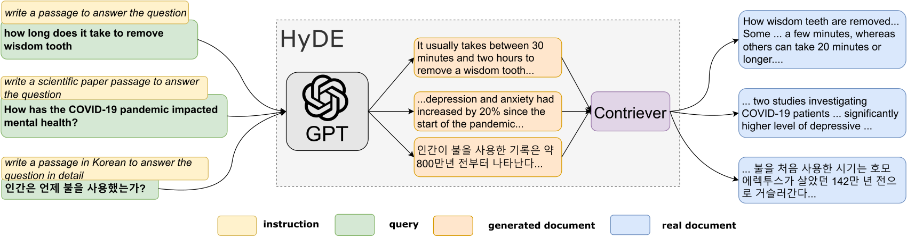

Precise Zero-Shot Dense Retrieval without Relevance Labels / 全文中英对照¶
来源：arXiv:2212.10496v1。英文段落后紧接中文，覆盖所取 HTML 版本的主文、附录、图表、脚注与参考文献；公式、数字表和书目信息共用。中文以机器初译为底稿，进行了术语整理与结构核对，尚未逐句人工审定；遇到歧义请以紧邻英文和原论文为准。 原作版权归所列作者，许可见 原作许可；中文译文与版式改写在该许可条件下提供（涉及 SA 时沿用相同许可，涉及 NC 时仅限非商业使用）。
Authors and affiliations / 作者与机构¶
Luyu Gao 1 Affiliation: Language Technologies Institute, Carnegie Mellon University Xueguang Ma [^footnotex1] Affiliation: David R. Cheriton School of Computer Science, University of Waterloo{luyug, callan}@cs.cmu.edu, {x93ma, jimmylin}@uwaterloo.ca Jimmy Lin Affiliation: David R. Cheriton School of Computer Science, University of Waterloo{luyug, callan}@cs.cmu.edu, {x93ma, jimmylin}@uwaterloo.ca Jamie Callan Affiliation: Language Technologies Institute, Carnegie Mellon University
Abstract / 摘要¶
EN. While dense retrieval has been shown effective and efficient across tasks and languages, it remains difficult to create effective fully zero-shot dense retrieval systems when no relevance label is available. In this paper, we recognize the difficulty of zero-shot learning and encoding relevance. Instead, we propose to pivot through Hy pothetical D ocument E mbeddings ( HyDE ). Given a query, HyDE first zero-shot instructs an instruction-following language model (e.g. InstructGPT ) to generate a hypothetical document. The document captures relevance patterns but is unreal and may contain false details. Then, an unsupervised contrastively learned encoder (e.g. Contriever ) encodes the document into an embedding vector. This vector identifies a neighborhood in the corpus embedding space, where similar real documents are retrieved based on vector similarity. This second step ground the generated document to the actual corpus, with the encoder’s dense bottleneck filtering out the incorrect details. Our experiments show that HyDE significantly outperforms the state-of-the-art unsupervised dense retriever Contriever and shows strong performance comparable to fine-tuned retrievers, across various tasks (e.g. web search, QA, fact verification) and languages (e.g. sw, ko, ja). 2
中. 虽然稠密检索已被证明跨任务和语言有效且高效，但在没有相关标签可用时，仍然很难创建有效的完全零样本稠密检索系统。在本文中，我们认识到零样本学习和编码相关性的困难。相反，我们建议以假设文档嵌入（HyDE）为中心。给定一个查询，HyDE 首先零样本指示指令跟踪语言模型（例如 InstructGPT ）生成假设文档。该文档捕获了相关模式，但并不真实，并且可能包含虚假细节。然后，无监督对比学习编码器（例如 Contriever ）将文档编码为嵌入向量。该向量标识语料库嵌入空间中的邻域，其中基于向量相似性检索相似的真实文档。第二步将生成的文档与实际语料库结合起来，利用编码器的密集瓶颈过滤掉不正确的细节。我们的实验表明，HyDE 显着优于最先进的无监督稠密检索器 Contriever，并且在各种任务（例如网络搜索、QA、事实验证）和语言（例如 sw、ko、ja）中表现出与微调检索器相当的强大性能。 2
Introduction / 简介¶
EN. Dense retrieval Lee et al. (2019) ; Karpukhin et al. (2020) , the method of retrieving documents using semantic embedding similarities, has been shown successful across tasks like web search, question answering, and fact verification. A variety of methods such as negative mining Xiong et al. (2021) ; Qu et al. (2021) , distillation Qu et al. (2021) ; Lin et al. (2021b) ; Hofstätter et al. (2021) and task-specific pre-training Izacard et al. (2021) ; Gao and Callan (2021) ; Lu et al. (2021) ; Gao and Callan (2022) ; Liu and Shao (2022) have been proposed to improve the effectiveness of supervised dense retrieval models.
中. 稠密检索 Lee 等人。 (2019);卡普欣等人。 (2020) 是一种使用语义嵌入相似性来检索文档的方法，已在网络搜索、问答和事实验证等任务中取得了成功。 Xiong等人的负挖掘等多种方法。 (2021);曲等人。 (2021)，蒸馏 Qu 等人。 (2021);林等人。 （2021b）；霍夫斯塔特等人。 (2021) 和特定任务预训练 Izacard 等人。 (2021);高和卡伦（2021）；卢等人。 (2021);高和卡兰（2022）； Liu 和 Shao（2022）提出了提高监督稠密检索模型的有效性。
EN. On the other hand, zero-shot dense retrieval still remains difficult. Many recent works consider the alternative transfer learning setup, where the dense retrievers are trained on a high-resource dataset and then evaluated on queries from new tasks. The MS-MARCO collection Bajaj et al. (2016) , a massive judged dataset with a large number of judged query-document pairs, is arguably the most commonly used. As argued by Izacard et al. (2021) , in practice, however, the existence of such a large dataset cannot always be assumed. Even MS-MARCO restricts commercial use and cannot be adopted in a variety of real-world search scenarios.
中. 另一方面，零样本稠密检索仍然很困难。最近的许多工作都考虑了替代的迁移学习设置，其中稠密检索器在高资源数据集上进行训练，然后根据新任务的查询进行评估。 MS-MARCO 系列 Bajaj 等人。 (2016) 是一个包含大量判断查询文档对的海量判断数据集，可以说是最常用的。正如 Izacard 等人所争论的那样。 (2021)，然而，在实践中，不能总是假设存在如此大的数据集。即使是MS-MARCO也限制商业用途，无法在各种现实世界的搜索场景中采用。

EN. Figure 1: An illustration of the HyDE model. Documents snippets are shown. HyDE serves all types of queries without changing the underlying GPT-3 and Contriever / mContriever models.
中. 图 1：HyDE 模型的图示。显示文档片段。 HyDE 可以服务所有类型的查询，而无需更改底层 GPT-3 和 Contriever / mContriever 模型。
EN. In this paper, we aim to build effective fully zero-shot dense retrieval systems that require no relevance supervision, work out-of-box and generalize across tasks. As supervision is not available, we start by examining self-supervised representation learning methods. Modern deep learning enables two distinct learning algorithms. At the token level, generative large language models (LLM) pre-trained on large corpus have demonstrated strong natural language understanding (NLU) and generation (NLG) capabilities Brown et al. (2020) ; Chen et al. (2021) ; Rae et al. (2021) ; Hoffmann et al. (2022) ; Thoppilan et al. (2022) ; Chowdhery et al. (2022) . At the document level, text (chunk) encoders pre-trained with contrastive objectives learn to encode document-document similarity into inner-product Izacard et al. (2021) ; Gao and Callan (2022) . On top of these, one extra insight into LLM is borrowed: the LLMs further trained to follow instructions can zero-shot generalize to diverse unseen instructions Ouyang et al. (2022) ; Sanh et al. (2022) ; Min et al. (2022) ; Wei et al. (2022) . Ouyang et al. (2022) show that with a small amount of data, GPT-3 Brown et al. (2020) models can be aligned to human intent to follow instructions.
中. 在本文中，我们的目标是构建有效的完全零样本稠密检索系统，该系统不需要相关性监督，开箱即用并跨任务泛化。由于无法进行监督，我们首先检查自监督表示学习方法。现代深度学习支持两种不同的学习算法。 Brown 等人在 token 层面上，在大型语料库上预训练的生成式大语言模型（LLM）表现出了强大的自然语言理解（NLU）和生成（NLG）能力。 (2020);陈等人。 (2021);雷伊等人。 (2021);霍夫曼等人。 (2022);托皮兰等人。 (2022);乔杜里等人。 （2022）。在文档级别，使用对比目标预先训练的文本（块）编码器学习将文档之间的相似性编码为内积 Izacard 等人。 (2021);高和卡伦（2022）。除此之外，借用了对法学硕士的一个额外见解：进一步训练以遵循指令的法学硕士可以零样本推广到各种看不见的指令 Ouyang 等人。 (2022);桑等人。 (2022);敏等人。 (2022);魏等人。 （2022）。欧阳等人。 (2022) 表明，GPT-3 Brown 等人用少量数据。 (2020) 模型可以与人类遵循指令的意图保持一致。
EN. With these ingredients, we propose to pivot through Hy pothetical D ocument E mbeddings ( HyDE ), and decompose dense retrieval into two tasks, a generative task performed by an instruction-following language model and a document-document similarity task performed by a contrastive encoder ( Figure 1 ). First, we feed the query to the generative model and instruct it to "write a document that answers the question", i.e. a hypothetical document. We expect the generative process to capture "relevance" by giving an example; the generated document is not real, can contain factual errors but is like a relevant document. In the second step, we use an unsupervised contrastive encoder to encode this document into an embedding vector. Here, we expect the encoder’s dense bottleneck to serve a lossy compressor, where the extra (hallucinated) details are filtered out from the embedding. We use this vector to search against the corpus embeddings. The most similar real documents are retrieved and returned. The retrieval leverages document-document similarity encoded in the inner-product during contrastive training. Note that, interestingly, with HyDE factorization, the query-document similarity score is no longer explicitly modeled nor computed. Instead, the retrieval task is cast into two NLU and NLG tasks.
中. 有了这些成分，我们建议以假设文档嵌入（ HyDE ）为中心，并将稠密检索分解为两个任务，一个是由指令跟踪语言模型执行的生成任务，另一个是由对比编码器执行的文档-文档相似性任务（图 1）。首先，我们将查询提供给生成模型并指示它“编写回答问题的文档”，即假设文档。我们希望生成过程能够通过举例来捕捉“相关性”；生成的文档不是真实的，可能包含事实错误，但类似于相关文档。在第二步中，我们使用无监督对比编码器将此文档编码为嵌入向量。在这里，我们期望编码器的密集瓶颈服务于有损压缩器，其中额外的（幻觉的）细节从嵌入中被过滤掉。我们使用这个向量来搜索语料库嵌入。检索并返回最相似的真实文档。检索利用对比训练期间内积中编码的文档-文档相似性。请注意，有趣的是，通过 HyDE 分解，查询文档相似度分数不再显式建模或计算。相反，检索任务被分为两个 NLU 和 NLG 任务。
EN. HyDE appears unsupervised. No model is trained in HyDE : both the generative model and the contrastive encoder remain intact. Supervision signals were only involved in instruction learning of our backbone LLM.
中. HyDE 似乎无人监管。 HyDE 中没有训练任何模型：生成模型和对比编码器都保持不变。监督信号仅参与我们骨干法学硕士的教学学习。
EN. In our experiments, we show HyDE using InstructGPT Ouyang et al. (2022) and Contriever Izacard et al. (2021) as backbone models significantly outperforms the previous state-of-the-art Contriever-only zero-shot no-relevance system on 11 queries sets, covering tasks like Web Search, Question Answering, Fact Verification and languages like Swahili, Korean, Japanese.
中. 在我们的实验中，我们使用 InstructGPT Ouyang 等人展示了 HyDE。 (2022) 和发明家 Izacard 等人。 (2021) 作为主干模型，在 11 个查询集上显着优于之前最先进的 Contriever-only 零样本无相关性系统，涵盖网页搜索、问答、事实验证等任务以及斯瓦希里语、韩语、日语等语言。
Related Works / 相关作品¶
Dense Retrieval / 稠密检索¶
EN. Lee et al. (2019) ; Karpukhin et al. (2020) has been extensively studied after the emergence of pre-trained Transformer language models Devlin et al. (2019) . Researchers studied the metric learning problems, such as training loss Karpukhin et al. (2020) and negative sampling Xiong et al. (2021) ; Qu et al. (2021) , and also introduced distillation Qu et al. (2021) ; Lin et al. (2021b) ; Hofstätter et al. (2021) . Later works studied the second stage pre-training of language model specifically for retrieval Izacard et al. (2021) ; Gao and Callan (2021) ; Lu et al. (2021) ; Gao and Callan (2022) ; Liu and Shao (2022) .
中. 李等人。 (2019);卡普欣等人。 Devlin 等人（2020）在预训练 Transformer 语言模型出现后得到了广泛的研究。 （2019）。研究人员研究了度量学习问题，例如 Karpukhin 等人的训练损失。 (2020) 和负采样 Xiong 等人。 (2021);曲等人。 (2021)，还介绍了蒸馏 Qu 等人。 (2021);林等人。 （2021b）；霍夫斯塔特等人。 （2021）。后来的工作研究了专门用于检索的语言模型的第二阶段预训练 Izacard 等人。 (2021);高和卡伦（2021）；卢等人。 (2021);高和卡兰（2022）；刘和邵（2022）。
EN. The popularity of dense retrieval can be partially attributed to the rich and successful research in very efficient minimum inner product search (MIPS) at very large (billion) scales Johnson et al. (2017) .
中. 稠密检索的流行可以部分归因于约翰逊等人在非常大（十亿）规模的非常有效的最小内积搜索（MIPS）方面的丰富而成功的研究。 （2017）。
Instructions-Following Language Models / 指令遵循语言模型¶
EN. Soon after the emergence of LLMs, several groups of researchers discover that LLMs trained on data consisting of instructions and their execution can zero-shot generalize to perform new tasks with new instructions Ouyang et al. (2022) ; Sanh et al. (2022) ; Min et al. (2022) ; Wei et al. (2022) . This can be done by standard supervised sequence-to-sequence learning or more effectively with reinforcement learning Ouyang et al. (2022) .
中. 法学硕士出现后不久，几组研究人员发现，法学硕士接受由指令组成的数据训练，其执行可以零样本泛化，以使用新指令执行新任务。 (2022);桑等人。 (2022);敏等人。 (2022);魏等人。 （2022）。这可以通过标准的监督序列到序列学习来完成，或者通过强化学习来更有效地完成 Ouyang 等人的研究。 （2022）。
EN. Concurrent to us, Asai et al. (2022) studied “Task-aware Retrieval with Instructions”. They fine-tuned dense encoders that can also encode task-specific instruction prepended to query. In comparison, we use an unsupervised encoder and handle different tasks and their instruction with an instruction following generative LLM, as described above.
中. 与我们同时，Asai 等人。 (2022) 研究了“带指令的任务感知检索”。他们对密集编码器进行了微调，这些编码器还可以对查询前的特定任务指令进行编码。相比之下，我们使用无监督编码器，并使用生成 LLM 后的指令处理不同的任务及其指令，如上所述。
Zero-Shot Dense Retrieval / 零样本稠密检索¶
EN. The tasks of zero-shot (dense) retrieval are arguably empirically defined by Thakur et al. (2021) for the neural retrieval community. Their BEIR benchmark consists of diverse retrieval tasks. The paper and many follow-up research generally consider the Transfer Learning setup where the dense retriever is first learned using a diverse and richly supervised corpus and query collection, namely MS-MARCO Thakur et al. (2021) ; Wang et al. (2022) ; Yu et al. (2022) .
中. 零样本（密集）检索的任务可以说是由 Thakur 等人凭经验定义的。 （2021）神经检索社区。他们的 BEIR 基准测试由不同的检索任务组成。该论文和许多后续研究通常考虑迁移学习设置，其中首先使用多样化且丰富的监督语料库和查询集合（即 MS-MARCO Thakur 等人）学习稠密检索器。 (2021);王等人。 (2022);于等人。 （2022）。
EN. However, as stated by Izacard et al. (2021) , such a large collection can rarely be assumed. In this paper, therefore, we study the problem of building effective dense retrieval systems without relevance labels. Similar to Izacard et al. (2021) , we also do not assume access to the test time corpora for training. This is a more realistic setup and prevents over-engineering on the test corpora.
中. 然而，正如 Izacard 等人所说。 (2021)，很少能假设如此大的集合。因此，在本文中，我们研究了在没有相关标签的情况下构建有效的稠密检索系统的问题。与伊扎卡德等人类似。 (2021)，我们也不假设可以访问测试时间语料库进行训练。这是一个更现实的设置，可以防止对测试语料库的过度设计。
EN. By the definition in Sachan et al. (2022) , our setup can be roughly considered as “unsupervised” . Strictly, as with Sachan et al. (2022) , the only supervision resides in the LLM, in the processing of learning to follow instructions.
中. 根据 Sachan 等人的定义。 (2022)，我们的设置可以粗略地认为是“无监督”。严格来说，就像 Sachan 等人一样。 (2022)，唯一的监督在于法学硕士，在学习遵循指示的过程中。
Generative Retrieval / 生成检索¶
EN. Generative search is a new class of retrieval methods that use neural generative models as search indices Metzler et al. (2021) ; Tay et al. (2022) ; Bevilacqua et al. (2022) ; Lee et al. (2022) . These models use (constrained) decoding to generate document identifiers, such as id and sub-string, which map directly to real documents. They have to go through special training procedures over relevance data; effective search may also need to use novel forms of search indices Bevilacqua et al. (2022) ; Lee et al. (2022) . In comparison, our method uses the standard MIPS index and requires no training or training data. Our generative model produces an intermediate hypothetical document to be fed into a dense encoder, instead of a real document.
中. 生成搜索是一类新型检索方法，它使用神经生成模型作为搜索索引 Metzler 等人。 (2021);泰等人。 (2022);贝维拉夸等人。 (2022);李等人。 （2022）。这些模型使用（约束）解码来生成文档标识符，例如 id 和子字符串，它们直接映射到真实文档。他们必须经过相关数据的特殊培训程序；有效的搜索可能还需要使用新颖形式的搜索索引 Bevilacqua 等人。 (2022);李等人。 （2022）。相比之下，我们的方法使用标准 MIPS 索引，不需要训练或训练数据。我们的生成模型生成一个中间假设文档，而不是真实文档，将其输入密集编码器。
Methodology / 方法论¶
EN. In this section, we first formally define the problem of (zero-shot) dense retrieval. Then we will introduce how HyDE is designed to solve it.
中. 在本节中，我们首先正式定义（零样本）稠密检索问题。接下来我们将介绍HyDE是如何设计来解决这个问题的。
Preliminaries / 预赛¶
EN. Dense retrieval models similarity between query and document with inner product similarity. Given a query \(q\) and document \(d\) , it uses two encoder function \(\text{enc}_{q}\) and \(\text{enc}_{d}\) to map them into \(d\) dimension vectors \(\mathbf{v_{q}},\mathbf{v_{d}}\) , whose inner product is used as similarity measurement.
中. 稠密检索通过内积相似性对查询和文档之间的相似性进行建模。给定查询 \(q\) 和文档 \(d\) ，它使用两个编码器函数 \(\text{enc}_{q}\) 和 \(\text{enc}_{d}\) 将它们映射到 \(d\) 维度向量 \(\mathbf{v_{q}},\mathbf{v_{d}}\) ，其内积用作相似性度量。
EN. For zero-shot retrieval, we consider \(L\) query sets \(Q_{1},Q_{2},...,Q_{L}\) and their corresponding search corpus, document sets \(D_{1},D_{2},...,D_{L}\) . Denote the \(j\) -th query from \(i\) -th set query set \(Q_{i}\) as \(\text{q}_{ij}\) . We need to fully define mapping functions \(\text{enc}_{q}\) and \(\text{enc}_{d}\) without access to any query set \(Q_{i}\) , document set \(D_{i}\) , or any relevance judgment \(r_{ij}\) .
中. 对于零样本检索，我们考虑 \(L\) 查询集 \(Q_{1},Q_{2},...,Q_{L}\) 及其相应的搜索语料库、文档集 \(D_{1},D_{2},...,D_{L}\) 。将来自第 \(i\) 集合查询集 \(Q_{i}\) 的第 \(j\) 查询表示为 \(\text{q}_{ij}\) 。我们需要完全定义映射函数\(\text{enc}_{q}\)和\(\text{enc}_{d}\)，而无需访问任何查询集\(Q_{i}\)、文档集\(D_{i}\)或任何相关性判断\(r_{ij}\)。
EN. The difficulty of zero-shot dense retrieval lies precisely in Equation 1 : it requires learning of two embedding functions (for query and document respectively) into the same embedding space where inner product captures relevance . Without relevance judgments/scores to fit, learning becomes intractable.
中. 零样本稠密检索的困难恰恰在于等式 1：它需要将两个嵌入函数（分别用于查询和文档）学习到相同的嵌入空间中，其中内积捕获相关性。如果没有合适的相关性判断/分数，学习就会变得棘手。
HyDE / 海德¶
EN. HyDE circumvents the aforementioned learning problem by performing search in document-only embedding space that captures document-document similarity. This can be easily learned using unsupervised contrastive learning Izacard et al. (2021) ; Gao et al. (2021) ; Gao and Callan (2022) . We set document encoder \(\text{enc}_{d}\) directly as a contrastive encoder \(\text{enc}_{\text{con}}\) .
中. HyDE 通过在仅文档嵌入空间中执行搜索来捕获文档之间的相似性，从而规避了上述学习问题。使用无监督对比学习 Izacard 等人可以轻松学习这一点。 (2021);高等人。 (2021);高和卡伦（2022）。我们直接将文档编码器 \(\text{enc}_{d}\) 设置为对比编码器 \(\text{enc}_{\text{con}}\) 。
EN. This function is also denoted as \(f\) for simplicity. This unsupervised contrastive encoder will be shared by all incoming document corpus.
中. 为了简单起见，该函数也表示为 \(f\)。这种无监督对比编码器将由所有传入文档语料库共享。
EN. To build the query vector, we consider in addition an instruction following LM, InstructLM. It takes a query \(q\) and a textual instruction inst and follows them to perform the task specified by inst . For simplicity, denote,
中. 为了构建查询向量，我们另外考虑 LM 之后的指令 InstructLM。它接受查询 \(q\) 和文本指令 inst 并遵循它们来执行 inst 指定的任务。为了简单起见，表示，
EN. Now we can use \(g\) to map queries to "hypothetical" documents by sampling from \(g\) , setting inst to be ‘‘write a paragraph that answers the question’’ . The generated document is not real, can and is likely to be ungrounded factually Brown et al. (2020) ; Thoppilan et al. (2022) . We only require it to capture relevance pattern. This is done by generating documents, i.e. providing examples. Critically, here we offload relevance modeling from representation learning model to an NLG model that generalizes significantly more easily, naturally, and effectively Brown et al. (2020) ; Ouyang et al. (2022) . Generating examples also replaces explicit modeling of relevance scores. We can now encode the generated document using the document encoder \(f\) . Write,
中. 现在我们可以使用 \(g\) 通过从 \(g\) 采样来将查询映射到“假设”文档，并将 inst 设置为“写一段回答问题的段落”。生成的文档不是真实的，可以而且很可能没有事实根据 Brown 等人。 (2020);托皮兰等人。 （2022）。我们只需要它来捕获相关性模式。这是通过生成文档（即提供示例）来完成的。重要的是，在这里我们将相关性建模从表示学习模型转移到 NLG 模型，该模型的泛化能力明显更容易、自然和有效 Brown 等人。 (2020);欧阳等人。 （2022）。生成示例还取代了相关性分数的显式建模。我们现在可以使用文档编码器 \(f\) 对生成的文档进行编码。写，
EN. Formally, \(g\) defines a probability distribution based on the chain rule. In this paper, we simply consider the expectation value, assuming the distribution of \(\mathbf{v}_{q_{ij}}\) is uni-modal, i.e. the query is not ambiguous. The study of ambiguous queries and diversity is left to future work. We estimate Equation 5 by sampling \(N\) documents from \(g\) , \([\hat{d_{1}},\hat{d_{2}},...,\hat{d_{N}}]\) .
中. 形式上，\(g\) 定义了基于链式法则的概率分布。在本文中，我们简单地考虑期望值，假设\(\mathbf{v}_{q_{ij}}\)的分布是单模态的，即查询不是二义性的。对歧义查询和多样性的研究留待未来的工作。我们通过从 \(g\) 、 \([\hat{d_{1}},\hat{d_{2}},...,\hat{d_{N}}]\) 中采样 \(N\) 文档来估计公式 5。
EN. We also consider the query as a possible hypothesis,
中. 我们还将查询视为可能的假设，
EN. Inner product is computed between \(\hat{\mathbf{v}}_{q_{ij}}\) and the set of all document vectors \(\{f(d)|d\in D_{i}\}\) . The most similar documents are retrieved. Here the encoder function \(f\) serves as a lossy compressor that outputs dense vectors, where the extra details are filtered and left out from the vector. It further grounds the hypothetical vector to the actual corpus and the real documents. The full HyDE system is illustrated in Figure 1 .
中. 内积是在 \(\hat{\mathbf{v}}_{q_{ij}}\) 和所有文档向量 \(\{f(d)|d\in D_{i}\}\) 的集合之间计算的。检索最相似的文档。这里，编码器函数 \(f\) 用作输出密集向量的有损压缩器，其中额外的细节被过滤并从向量中剔除。它将假设向量进一步基于实际语料库和真实文档。完整的 HyDE 系统如图 1 所示。
| DL19 | DL19 | DL19 | DL20 | DL20 | DL20 | |
|---|---|---|---|---|---|---|
| map 地图 |
ndcg@10 | recall@1k 回忆@1k |
map 地图 |
ndcg@10 | recall@1k 回忆@1k |
|
| w/o relevance judgement 没有相关性判断 |
w/o relevance judgement 没有相关性判断 |
w/o relevance judgement 没有相关性判断 |
w/o relevance judgement 没有相关性判断 |
w/o relevance judgement 没有相关性判断 |
w/o relevance judgement 没有相关性判断 |
w/o relevance judgement 没有相关性判断 |
| BM25 | 30.1 | 50.6 | 75.0 | 28.6 | 48.0 | 78.6 |
| Contriever 发明家 |
24.0 | 44.5 | 74.6 | 24.0 | 42.1 | 75.4 |
| HyDE 海德 |
41.8 | 61.3 | 88.0 | 38.2 | 57.9 | 84.4 |
| w/ relevance judgement 带相关性判断 |
w/ relevance judgement 带相关性判断 |
w/ relevance judgement 带相关性判断 |
w/ relevance judgement 带相关性判断 |
w/ relevance judgement 带相关性判断 |
w/ relevance judgement 带相关性判断 |
w/ relevance judgement 带相关性判断 |
| DPR | 36.5 | 62.2 | 76.9 | 41.8 | 65.3 | 81.4 |
| ANCE 恩斯 |
37.1 | 64.5 | 75.5 | 40.8 | 64.6 | 77.6 |
| Contriever \({}^{\text{FT}}\) 发明者\({}^{\text{FT}}\) |
41.7 | 62.1 | 83.6 | 43.6 | 63.2 | 85.8 |
EN. Table 1: Results for web search on DL19/20. Best performing w/o relevance and overall system(s) are marked bold . DPR, ANCE and Contriever \({}^{\text{FT}}\) are in-domain supervised models that are finetuned on MS MARCO training data.
中. 表 1：DL19/20 的网络搜索结果。表现最好的无相关性和整个系统被标记为粗体。 DPR、ANCE 和 Contriever \({}^{\text{FT}}\) 是在 MS MARCO 训练数据上进行微调的域内监督模型。
Experiments / 实验¶
Setup / 设置¶
Implementation / 实施¶
EN. We implement HyDE using InstructGPT , a GPT-3 model from the instruct series ( text-davinci-003 ; Ouyang et al. (2022) ) and Contriever models Izacard et al. (2021) . We sample from InstructGPT using the OpenAI playground default temperature of 0.7 for open-ended generations. We use the English-only Contriever model for English retrieval tasks and multilingual mContriever for non-English tasks. We conducted retrieval experiments with the Pyserini toolkit Lin et al. (2021a) .
中. 我们使用 InstructGPT 来实现 HyDE，InstructGPT 是来自 instruct 系列的 GPT-3 模型（text-davinci-003；Ouyang 等人（2022））和 Contriever 模型 Izacard 等人。 （2021）。我们使用 OpenAI 游乐场默认温度 0.7 从 InstructGPT 进行采样，进行开放式生成。我们使用纯英语 Contriever 模型执行英语检索任务，使用多语言 mContriever 执行非英语任务。我们使用 Pyserini 工具包 Lin 等人进行了检索实验。 （2021a）。
Datasets / 数据集¶
EN. We consider web search query sets TREC DL19 Craswell et al. (2020a) and DL20 Craswell et al. (2020b) ; they are based on the MS-MARCO dataset Bajaj et al. (2016) . We also use a diverse collection of 6 low-resource datasets from the BEIR dataset Thakur et al. (2021) . For non-English retrieval, we consider Swahili, Korean, Japanese, and Bengali from the Mr.Tydi dataset Zhang et al. (2021) .
中. 我们考虑网络搜索查询集 TREC DL19 Craswell 等人。 (2020a) 和 DL20 Craswell 等人。 (2020b);它们基于 MS-MARCO 数据集 Bajaj 等人。 （2016）。我们还使用来自 Thakur 等人的 BEIR 数据集的 6 个低资源数据集的多样化集合。 （2021）。对于非英语检索，我们考虑了来自 Mr.Tydi 数据集的斯瓦希里语、韩语、日语和孟加拉语。 （2021）。
EN. We use different instructions for each dataset. They share a similar structure but have different quantifiers to control the exact form of the generated hypothetical documents. These instructions can be found in subsection A.1 .
中. 我们对每个数据集使用不同的指令。它们具有相似的结构，但具有不同的量词来控制生成的假设文档的确切形式。这些说明可以在 A.1 小节中找到。
Compared Systems / 比较系统¶
EN. Contriever models, Contriever and mContriever , serve as our major baseline. They are trained using unsupervised contrastive learning. HyDE retrievers share the exact same embedding spaces with them. The only difference is how the query vector is built. These comparisons allow us to easily examine the effect of HyDE . The classical heuristic-based lexical retriever BM25 is also included.
中. Contriever 模型 Contriever 和 mContriever 是我们的主要基准。他们使用无监督对比学习进行训练。 HyDE 检索器与它们共享完全相同的嵌入空间。唯一的区别在于查询向量的构建方式。这些比较使我们能够轻松检查 HyDE 的效果。还包括经典的基于启发式的词汇检索器 BM25。
EN. Several systems that involve fine-tuning on massive relevance data are also included as references. We consider models fine-tuned on MS-MARCO and transferred, DPR and ANCE, from the BEIR paper. For multilingual, we include the mDPR model from Mr.Tydi paper and MS-MARCO fine-tuned mBERT and XLM-R from the Contriever paper. We also include the state-of-the-art transfer learning models: Contriever and mContriever fine-tuned on MS-MARCO, denoted Contriever \({}^{\text{FT}}\) and mContriever \({}^{\text{FT}}\) . These models have run through the state-of-the-art retrieval model training pipeline that involves second-stage retrieval-specific pre-training Lee et al. (2019) and a few rounds of fine-tuning Qu et al. (2021) ; they should be considered empirical upper bounds.
中. 还包括一些涉及对大量相关数据进行微调的系统作为参考。我们考虑在 MS-MARCO 上微调模型，并从 BEIR 论文中转移 DPR 和 ANCE。对于多语言，我们包括来自 Mr.Tydi 论文的 mDPR 模型以及来自 Contriever 论文的 MS-MARCO 微调的 mBERT 和 XLM-R。我们还包括最先进的迁移学习模型：在 MS-MARCO 上微调的 Contriever 和 mContriever，表示为 Contriever \({}^{\text{FT}}\) 和 mContriever \({}^{\text{FT}}\) 。这些模型已经通过了最先进的检索模型训练管道，其中涉及第二阶段特定于检索的预训练 Lee 等人。 (2019) 和 Qu 等人的几轮微调。 (2021);它们应被视为经验上限。
| Scifact 科学事实 |
Arguana 阿尔瓜纳 |
Trec-Covid 特雷克-科维德 |
FiQA 质量保证协会 |
DBPedia 数据库百科 |
TREC-NEWS TREC新闻 |
|
|---|---|---|---|---|---|---|
| nDCG@10 | nDCG@10 | nDCG@10 | nDCG@10 | nDCG@10 | nDCG@10 | nDCG@10 |
| w/o relevance judgement 没有相关性判断 |
w/o relevance judgement 没有相关性判断 |
w/o relevance judgement 没有相关性判断 |
w/o relevance judgement 没有相关性判断 |
w/o relevance judgement 没有相关性判断 |
w/o relevance judgement 没有相关性判断 |
w/o relevance judgement 没有相关性判断 |
| BM25 | 67.9 | 39.7 | 59.5 | 23.6 | 31.8 | 39.5 |
| Contriever 发明家 |
64.9 | 37.9 | 27.3 | 24.5 | 29.2 | 34.8 |
| HyDE 海德 |
69.1 | 46.6 | 59.3 | 27.3 | 36.8 | 44.0 |
| w/ relevance judgement 带相关性判断 |
w/ relevance judgement 带相关性判断 |
w/ relevance judgement 带相关性判断 |
w/ relevance judgement 带相关性判断 |
w/ relevance judgement 带相关性判断 |
w/ relevance judgement 带相关性判断 |
w/ relevance judgement 带相关性判断 |
| DPR | 31.8 | 17.5 | 33.2 | 29.5 | 26.3 | 16.1 |
| ANCE 恩斯 |
50.7 | 41.5 | 65.4 | 30.0 | 28.1 | 38.2 |
| Contriever \({}^{\text{FT}}\) 发明者\({}^{\text{FT}}\) |
67.7 | 44.6 | 59.6 | 32.9 | 41.3 | 42.8 |
| Recall@100 召回@100 |
Recall@100 召回@100 |
Recall@100 召回@100 |
Recall@100 召回@100 |
Recall@100 召回@100 |
Recall@100 召回@100 |
Recall@100 召回@100 |
| w/o relevance judgement 没有相关性判断 |
w/o relevance judgement 没有相关性判断 |
w/o relevance judgement 没有相关性判断 |
w/o relevance judgement 没有相关性判断 |
w/o relevance judgement 没有相关性判断 |
w/o relevance judgement 没有相关性判断 |
w/o relevance judgement 没有相关性判断 |
| BM25 | 92.5 | 93.2 | 49.8 | 54.0 | 46.8 | 44.7 |
| Contriever 发明家 |
92.6 | 90.1 | 17.2 | 56.2 | 45.3 | 42.3 |
| HyDE 海德 |
96.4 | 97.9 | 41.4 | 62.1 | 47.2 | 50.9 |
| w/ relevance judgement 带相关性判断 |
w/ relevance judgement 带相关性判断 |
w/ relevance judgement 带相关性判断 |
w/ relevance judgement 带相关性判断 |
w/ relevance judgement 带相关性判断 |
w/ relevance judgement 带相关性判断 |
w/ relevance judgement 带相关性判断 |
| DPR | 72.7 | 75.1 | 21.2 | 34.2 | 34.9 | 21.5 |
| ANCE 恩斯 |
81.6 | 93.7 | 45.7 | 58.1 | 31.9 | 39.8 |
| Contriever \({}^{\text{FT}}\) 发明者\({}^{\text{FT}}\) |
94.7 | 97.7 | 40.7 | 65.6 | 54.1 | 49.2 |
EN. Table 2: Low resource tasks from BEIR. Best performing w/o relevance and overall system(s) are marked bold .
中. 表 2：BEIR 的低资源任务。表现最好的无相关性和整个系统被标记为粗体。
Web Search / 网页搜索¶
EN. In Table 1 , we show retrieval results on TREC DL19 and TREC DL20. We see HyDE bring sizable improvements to Contriever across the board for both precision-oriented and recall metrics. While unsupervised Contriever can underperform the classical BM25 approach, HyDE outperforms BM25 by large margins.
中. 在表1中，我们显示了TREC DL19和TREC DL20的检索结果。我们看到 HyDE 在面向精确度和召回率指标方面为 Contriever 带来了全面的显着改进。虽然无监督 Contriever 的性能可能不如经典的 BM25 方法，但 HyDE 的性能却大幅优于 BM25。
EN. HyDE remains competitive even when compared to fine-tuned models. Note that TREC DL19/20 are search tasks defined on MS-MARCO and there, all the fine-tuned models are richly supervised . On TREC DL19, HyDE shows comparable map and ndcg@10 to Contriever \({}^{\text{FT}}\) and best recall@1k. On DL20, HyDE gets around 10% lower map and ndcg@10 than Contriever \({}^{\text{FT}}\) and similar recall@1k. The ANCE model shows better ndcg@10 numbers than HyDE but lower recall, suggesting it may be biased to a subset of queries and/or relevant documents.
中. 即使与经过微调的模型相比，HyDE 仍然具有竞争力。请注意，TREC DL19/20 是在 MS-MARCO 上定义的搜索任务，并且所有微调模型都受到丰富的监督。在 TREC DL19 上，HyDE 显示了与 Contriever \({}^{\text{FT}}\) 和最佳召回率@1k 相当的图谱和 ndcg@10。在 DL20 上，HyDE 的地图和 ndcg@10 比 Contriever \({}^{\text{FT}}\) 和类似的recall@1k 低约 10%。 ANCE 模型显示出比 HyDE 更好的 ndcg@10 数字，但召回率较低，这表明它可能偏向于查询和/或相关文档的子集。
Low Resource Retrieval / 低资源检索¶
EN. In Table 2 , we show retrieval results on low-resource tasks from BEIR. Similar to web search, HyDE again brings sizable improvements to Contriever across the board in terms of both ndcg and recall. HyDE is only outperformed by BM25 on one dataset, TREC-Covid but with a tiny 0.2 margin; in comparison, the underlying Contriever underperforms by more than 50%.
中. 在表 2 中，我们显示了 BEIR 低资源任务的检索结果。与网络搜索类似，HyDE 再次在 ndcg 和召回率方面为 Contriever 带来了全面的大幅改进。 HyDE 仅在一个数据集 TREC-Covid 上优于 BM25，但只有 0.2 的微小差距；相比之下，底层 Contriever 的表现落后 50% 以上。
EN. We also observe HyDE demonstrates strong performance compared to fine-tuned models. HyDE generally shows better performance than ANCE and DPR, even though the two are fine-tuned on MS-MARCO and ANCE also involves some sophisticated hard negative techniques. Contriever \({}^{\text{FT}}\) shows performance advantages on FiQA and DBPedia. These involve retrieval of financial posts or entities respectively. We believe the performance difference can be attributed to the under-specification of the instruction; more elaborative instructions may help.
中. 我们还观察到，与微调模型相比，HyDE 表现出了强大的性能。 HyDE 通常表现出比 ANCE 和 DPR 更好的性能，尽管两者在 MS-MARCO 上进行了微调，而且 ANCE 还涉及一些复杂的硬负技术。发明者 \({}^{\text{FT}}\) 在 FiQA 和 DBPedia 上展示了性能优势。这些分别涉及财务职位或实体的检索。我们认为性能差异可归因于指令规格不足；更详细的说明可能会有所帮助。
Multilingual Retrieval / 多语言检索¶
| Swahili 斯瓦希里语 |
Korean 韩语 |
Japanese 日语 |
Bengali 孟加拉语 |
|
|---|---|---|---|---|
| w/o relevance judgement 没有相关性判断 |
w/o relevance judgement 没有相关性判断 |
w/o relevance judgement 没有相关性判断 |
w/o relevance judgement 没有相关性判断 |
|
| BM25 | 38.9 | 28.5 | 21.2 | 41.8 |
| mContriever | 38.3 | 22.3 | 19.5 | 35.3 |
| HyDE 海德 |
41.7 | 30.6 | 30.7 | 41.3 |
| w/ relevance judgement 带相关性判断 |
w/ relevance judgement 带相关性判断 |
w/ relevance judgement 带相关性判断 |
w/ relevance judgement 带相关性判断 |
|
| mDPR 多普勒 |
7.3 | 21.9 | 18.1 | 25.8 |
| mBERT | 37.4 | 28.1 | 27.1 | 35.1 |
| XLM-R | 35.1 | 32.2 | 24.8 | 41.7 |
| mContriever \({}^{\text{FT}}\) | 51.2 | 34.2 | 32.4 | 42.3 |
EN. Table 3: MRR@100 on Mr.Tydi. Best performing w/o relevance and overall system(s) are marked bold .
中. 表 3：Tydi 先生的 MRR@100。表现最好的无相关性和整个系统被标记为粗体。
EN. Multilingual setup poses several additional challenges to HyDE . The small-sized contrastive encoder gets saturated as the number of languages scales Conneau et al. (2020) ; Izacard et al. (2021) . Meanwhile, our generative LLM faces an opposite issue: with languages of not as high resource as English or French, the high capacity LLM can get under-trained Hoffmann et al. (2022) .
中. 多语言设置给 HyDE 带来了一些额外的挑战。随着语言数量的扩展，小型对比编码器变得饱和 Conneau 等人。 (2020);伊扎卡德等人。 （2021）。与此同时，我们的生成式法学硕士面临着一个相反的问题：对于资源不如英语或法语那么高的语言，高能力的法学硕士可能会受到训练不足的霍夫曼等人的影响。 （2022）。
EN. Nevertheless, in Table 3 , we still find HyDE able to improve the mContriever model. It can outperform non-Contriever models fine-tuned on and transferred from MS-MARCO. On the other hand, we do observe some margins between HyDE and fine-tuned mContriever \({}^{\text{FT}}\) . Since HyDE and mContriever \({}^{\text{FT}}\) use similar contrastive encoders, we hypothesize this is because the non-English languages we considered are under-trained in both pre-training and instruction learning stages.
中. 尽管如此，在表3中，我们仍然发现HyDE能够改进mContriever模型。它的性能优于在 MS-MARCO 上微调和传输的非 Contriever 模型。另一方面，我们确实观察到 HyDE 和微调后的 mContriever \({}^{\text{FT}}\) 之间存在一些差距。由于 HyDE 和 mContriever \({}^{\text{FT}}\) 使用类似的对比编码器，我们假设这是因为我们考虑的非英语语言在预训练和指令学习阶段都训练不足。
Analysis / 分析¶
EN. The generative LLM and contrastive encoder make up the backbone of HyDE . In this section, we study the effect of changing their realizations. In particular, we consider smaller language models (LM) and fine-tuned encoders. We conduct our studies on TREC DL19/20.
中. 生成式 LLM 和对比编码器构成了 HyDE 的支柱。在本节中，我们研究改变他们的认识的影响。特别是，我们考虑更小的语言模型（LM）和微调编码器。我们对 TREC DL19/20 进行研究。
| Model 型号 |
DL19 | DL20 |
|---|---|---|
| Contriever 发明家 |
44.5 | 42.1 |
| Contriever \({}^{\text{FT}}\) 发明者\({}^{\text{FT}}\) |
62.1 | 63.2 |
| HyDE 海德 |
||
| w/ Contriever 与发明者 |
||
| w/ Flan-T5 (11b) 带果馅饼-T5 (11b) |
48.9 | 52.9 |
| w/ Cohere (52b) 带凝聚力 (52b) |
53.8 | 53.8 |
| w/ GPT (175b) 带 GPT (175b) |
61.3 | 57.9 |
| w/ Contriever \({}^{\text{FT}}\) 带发明者 \({}^{\text{FT}}\) |
||
| w/ Flan-T5 (11b) 带果馅饼-T5 (11b) |
60.2 | 62.1 |
| w/ Cohere (52b) 带凝聚力 (52b) |
61.4 | 63.1 |
| w/ GPT (175b) 带 GPT (175b) |
67.4 | 63.5 |
EN. Table 4: NDCG@10 on TREC DL19/20. Effect of changing different instruction LMs and using fine-tuned encoder. Best w/o relevance and overall models are marked bold .
中. 表 4：TREC DL19/20 上的 NDCG@10。更改不同指令 LM 和使用微调编码器的效果。最好的无相关性和整体模型被标记为粗体。
Effect of Different Generative Models / 不同生成模型的效果¶
EN. In Table 4 , we show HyDE using other instruction-following language models. In particular, we consider a 52-billion Cohere model ( command-xlarge-20221108 ) and a 11-billion FLAN model ( FLAN-T5-xxl ; Wei et al. (2022) ). 3 Generally, we observe that all models bring improvement to the unsupervised Contriever , with larger models bringing larger improvements. At the time when this paper is written, the Cohere model is still experimental without much detail disclosed. We can only tentatively hypothesize that training techniques may have also played some role in the performance difference.
中. 在表 4 中，我们展示了使用其他指令跟踪语言模型的 HyDE。特别是，我们考虑了 520 亿个 Cohere 模型（command-xlarge-20221108）和一个 110 亿个 FLAN 模型（FLAN-T5-xxl；Wei et al. (2022)）。 3 一般来说，我们观察到所有模型都为无监督 Contriever 带来了改进，较大的模型带来了更大的改进。在撰写本文时，Cohere 模型仍处于实验阶段，没有透露太多细节。我们只能暂时假设训练技巧也可能在表现差异中发挥了一定作用。
HyDE with Fine-tuned Encoder / 带微调编码器的 HyDE¶
EN. To begin with, HyDE with fine-tuned encoder is not the intended usage: HyDE is more powerful and irreplaceable when few relevance labels are present. Here we are interested to find out if and how HyDE embedding can affect fine-tuned encoders. In Table 4 , we see that less powerful instruction LMs can negatively impact the overall performance of the fine-tuned retriever. (To remind our readers, Contriever \({}^{\text{FT}}\) is in-domain supervisedly fine-tuned for TREC DL19/20). The performance degradations remain small. On the other hand, we also observe the InstructGPT model able to further bring up the performance, especially on DL19. This suggests that there may still exist certain factors not captured by the fine-tuned encoder but only by the generative model.
中. 首先，带有微调编码器的 HyDE 并不是预期用途：当存在很少的相关标签时，HyDE 更强大且不可替代。在这里，我们有兴趣了解 HyDE 嵌入是否以及如何影响微调编码器。在表 4 中，我们看到功能较弱的指令 LM 会对微调检索器的整体性能产生负面影响。 （提醒我们的读者，Contriever \({}^{\text{FT}}\) 针对 TREC DL19/20 进行了域内监督微调）。性能下降仍然很小。另一方面，我们还观察到 InstructGPT 模型能够进一步提升性能，尤其是在 DL19 上。这表明可能仍然存在某些未由微调编码器捕获而仅由生成模型捕获的因素。
Conclusion / 结论¶
EN. At the end of the paper, we encourage the readers to take a moment and reflect on the HyDE model. Compare it to some of the other recently seen retrievers or re-ranker. These other models probably differ in their architecture, training method, and/or task, but probably all of them involve modeling relevance scores between a pair of query and document. Dense retrievers consider vector similarities while self-attentive re-rankers regression scores. In comparison, the concept of relevance in HyDE is captured by an NLG model and the language generation process. We demonstrate in many cases, HyDE can be as effective as dense retrievers that learn to model numerical relevance scores. So, is numerical relevance just a statistical artifact of language understanding? Will a weak retriever theoretically suffice as the NLU & NLG models rapidly become stronger? Rushing to conclusions is not smart; more works need to be done to get answers. With this paper, we just want to raise these questions.
中. 在本文的最后，我们鼓励读者花点时间思考一下 HyDE 模型。将其与其他一些最近看到的检索器或重新排序器进行比较。这些其他模型可能在架构、训练方法和/或任务方面有所不同，但它们可能都涉及对一对查询和文档之间的相关性分数进行建模。稠密检索器考虑向量相似性，而自我注意重新排序回归分数。相比之下，HyDE 中的相关性概念是由 NLG 模型和语言生成过程捕获的。我们在许多情况下证明，HyDE 可以与学习建模数字相关性分数的稠密检索器一样有效。那么，数字相关性只是语言理解的统计产物吗？随着 NLU 和 NLG 模型迅速变得更强，理论上弱检索器就足够了吗？仓促下结论并不明智；需要做更多的工作才能得到答案。通过这篇论文，我们只想提出这些问题。
EN. Concretely in this paper, we introduce a new paradigm of interactions between LLM and dense encoder/retriever. We demonstrate (part of) relevance modeling and instruction understanding can be delegated to the more powerful and flexible LLM. As a consequence, the need for relevance labels is removed. We are excited to see how this can be generalized further to more sophisticated tasks like multi-hop retrieval/QA and conversational search.
中. 具体来说，在本文中，我们介绍了 LLM 和密集编码器/检索器之间交互的新范例。我们证明（部分）相关性建模和指令理解可以委托给更强大、更灵活的法学硕士。因此，不再需要相关性标签。我们很高兴看到如何将其进一步推广到更复杂的任务，例如多跳检索/QA 和会话搜索。
EN. We argue HyDE is also of practical use though not necessarily over the entire lifespan of a search system. At the very beginning of the life of the search system, serving queries using HyDE offers performance comparable to a fine-tuned model, which no other relevance-free model can offer. As the search log grows, a supervised dense retriever can be gradually rolled out. As the dense retriever grows stronger, more queries will be routed to it, with only less common and emerging ones going to HyDE backend.
中. 我们认为 HyDE 也具有实际用途，尽管不一定在搜索系统的整个生命周期中都有用。在搜索系统生命周期的最初阶段，使用 HyDE 提供查询服务可提供与微调模型相当的性能，这是其他无相关性模型无法提供的。随着搜索日志的增长，可以逐渐推出有监督的稠密检索器。随着稠密检索器变得越来越强大，更多的查询将被路由到它，只有不太常见和新兴的查询才会被发送到 HyDE 后端。
References / 参考文献¶
-
Asai et al. (2022) Akari Asai, Timo Schick, Patrick Lewis, Xilun Chen, Gautier Izacard, Sebastian Riedel, Hannaneh Hajishirzi, and Wen-tau Yih. 2022. Task-aware retrieval with instructions .
-
Bajaj et al. (2016) Payal Bajaj, Daniel Campos, Nick Craswell, Li Deng, Jianfeng Gao, Xiaodong Liu, Rangan Majumder, Andrew McNamara, Bhaskar Mitra, Tri Nguyen, Mir Rosenberg, Xia Song, Alina Stoica, Saurabh Tiwary, and Tong Wang. 2016. Ms marco: A human generated machine reading comprehension dataset .
-
Bevilacqua et al. (2022) Michele Bevilacqua, Giuseppe Ottaviano, Patrick Lewis, Wen-tau Yih, Sebastian Riedel, and Fabio Petroni. 2022. Autoregressive search engines: Generating substrings as document identifiers . CoRR , abs/2204.10628.
-
Brown et al. (2020) Tom B. Brown, Benjamin Mann, Nick Ryder, Melanie Subbiah, Jared Kaplan, Prafulla Dhariwal, Arvind Neelakantan, Pranav Shyam, Girish Sastry, Amanda Askell, Sandhini Agarwal, Ariel Herbert-Voss, Gretchen Krueger, Tom Henighan, Rewon Child, Aditya Ramesh, Daniel M. Ziegler, Jeffrey Wu, Clemens Winter, Christopher Hesse, Mark Chen, Eric Sigler, Mateusz Litwin, Scott Gray, Benjamin Chess, Jack Clark, Christopher Berner, Sam McCandlish, Alec Radford, Ilya Sutskever, and Dario Amodei. 2020. Language models are few-shot learners . In Advances in Neural Information Processing Systems 33: Annual Conference on Neural Information Processing Systems 2020, NeurIPS 2020, December 6-12, 2020, virtual .
-
Chen et al. (2021) Mark Chen, Jerry Tworek, Heewoo Jun, Qiming Yuan, Henrique Ponde de Oliveira Pinto, Jared Kaplan, Harri Edwards, Yuri Burda, Nicholas Joseph, Greg Brockman, Alex Ray, Raul Puri, Gretchen Krueger, Michael Petrov, Heidy Khlaaf, Girish Sastry, Pamela Mishkin, Brooke Chan, Scott Gray, Nick Ryder, Mikhail Pavlov, Alethea Power, Lukasz Kaiser, Mohammad Bavarian, Clemens Winter, Philippe Tillet, Felipe Petroski Such, Dave Cummings, Matthias Plappert, Fotios Chantzis, Elizabeth Barnes, Ariel Herbert-Voss, William Hebgen Guss, Alex Nichol, Alex Paino, Nikolas Tezak, Jie Tang, Igor Babuschkin, Suchir Balaji, Shantanu Jain, William Saunders, Christopher Hesse, Andrew N. Carr, Jan Leike, Josh Achiam, Vedant Misra, Evan Morikawa, Alec Radford, Matthew Knight, Miles Brundage, Mira Murati, Katie Mayer, Peter Welinder, Bob McGrew, Dario Amodei, Sam McCandlish, Ilya Sutskever, and Wojciech Zaremba. 2021. Evaluating large language models trained on code .
-
Chowdhery et al. (2022) Aakanksha Chowdhery, Sharan Narang, Jacob Devlin, Maarten Bosma, Gaurav Mishra, Adam Roberts, Paul Barham, Hyung Won Chung, Charles Sutton, Sebastian Gehrmann, Parker Schuh, Kensen Shi, Sasha Tsvyashchenko, Joshua Maynez, Abhishek Rao, Parker Barnes, Yi Tay, Noam Shazeer, Vinodkumar Prabhakaran, Emily Reif, Nan Du, Ben Hutchinson, Reiner Pope, James Bradbury, Jacob Austin, Michael Isard, Guy Gur-Ari, Pengcheng Yin, Toju Duke, Anselm Levskaya, Sanjay Ghemawat, Sunipa Dev, Henryk Michalewski, Xavier Garcia, Vedant Misra, Kevin Robinson, Liam Fedus, Denny Zhou, Daphne Ippolito, David Luan, Hyeontaek Lim, Barret Zoph, Alexander Spiridonov, Ryan Sepassi, David Dohan, Shivani Agrawal, Mark Omernick, Andrew M. Dai, Thanumalayan Sankaranarayana Pillai, Marie Pellat, Aitor Lewkowycz, Erica Moreira, Rewon Child, Oleksandr Polozov, Katherine Lee, Zongwei Zhou, Xuezhi Wang, Brennan Saeta, Mark Diaz, Orhan Firat, Michele Catasta, Jason Wei, Kathy Meier-Hellstern, Douglas Eck, Jeff Dean, Slav Petrov, and Noah Fiedel. 2022. Palm: Scaling language modeling with pathways .
-
Conneau et al. (2020) Alexis Conneau, Kartikay Khandelwal, Naman Goyal, Vishrav Chaudhary, Guillaume Wenzek, Francisco Guzmán, Edouard Grave, Myle Ott, Luke Zettlemoyer, and Veselin Stoyanov. 2020. Unsupervised cross-lingual representation learning at scale . In Proceedings of the 58th Annual Meeting of the Association for Computational Linguistics , pages 8440–8451, Online. Association for Computational Linguistics.
-
Craswell et al. (2020a) Nick Craswell, Bhaskar Mitra, Emine Yilmaz, Daniel Campos, and Ellen M. Voorhees. 2020a. Overview of the trec 2019 deep learning track .
-
Craswell et al. (2020b) Nick Craswell, Bhaskar Mitra, Emine Yilmaz, Daniel Fernando Campos, and Ellen M. Voorhees. 2020b. Overview of the trec 2020 deep learning track. ArXiv , abs/2003.07820.
-
Devlin et al. (2019) Jacob Devlin, Ming-Wei Chang, Kenton Lee, and Kristina Toutanova. 2019. BERT: Pre-training of deep bidirectional transformers for language understanding . In Proceedings of the 2019 Conference of the North American Chapter of the Association for Computational Linguistics: Human Language Technologies, Volume 1 (Long and Short Papers) , pages 4171–4186, Minneapolis, Minnesota. Association for Computational Linguistics.
-
Gao and Callan (2021) Luyu Gao and Jamie Callan. 2021. Condenser: a pre-training architecture for dense retrieval . In Proceedings of the 2021 Conference on Empirical Methods in Natural Language Processing , pages 981–993, Online and Punta Cana, Dominican Republic. Association for Computational Linguistics.
-
Gao and Callan (2022) Luyu Gao and Jamie Callan. 2022. Unsupervised corpus aware language model pre-training for dense passage retrieval . In Proceedings of the 60th Annual Meeting of the Association for Computational Linguistics (Volume 1: Long Papers) , pages 2843–2853, Dublin, Ireland. Association for Computational Linguistics.
-
Gao et al. (2021) Tianyu Gao, Xingcheng Yao, and Danqi Chen. 2021. SimCSE: Simple contrastive learning of sentence embeddings . In Proceedings of the 2021 Conference on Empirical Methods in Natural Language Processing , pages 6894–6910, Online and Punta Cana, Dominican Republic. Association for Computational Linguistics.
-
Hoffmann et al. (2022) Jordan Hoffmann, Sebastian Borgeaud, Arthur Mensch, Elena Buchatskaya, Trevor Cai, Eliza Rutherford, Diego de Las Casas, Lisa Anne Hendricks, Johannes Welbl, Aidan Clark, Tom Hennigan, Eric Noland, Katie Millican, George van den Driessche, Bogdan Damoc, Aurelia Guy, Simon Osindero, Karen Simonyan, Erich Elsen, Jack W. Rae, Oriol Vinyals, and Laurent Sifre. 2022. Training compute-optimal large language models .
-
Hofstätter et al. (2021) Sebastian Hofstätter, Sheng-Chieh Lin, Jheng-Hong Yang, Jimmy Lin, and Allan Hanbury. 2021. Efficiently teaching an effective dense retriever with balanced topic aware sampling . In Proceedings of the 44th International ACM SIGIR Conference on Research and Development in Information Retrieval , SIGIR ’21, page 113–122, New York, NY, USA. Association for Computing Machinery.
-
Izacard et al. (2021) Gautier Izacard, Mathilde Caron, Lucas Hosseini, Sebastian Riedel, Piotr Bojanowski, Armand Joulin, and Edouard Grave. 2021. Towards unsupervised dense information retrieval with contrastive learning . CoRR , abs/2112.09118.
-
Johnson et al. (2017) Jeff Johnson, Matthijs Douze, and Hervé Jégou. 2017. Billion-scale similarity search with gpus . CoRR , abs/1702.08734.
-
Karpukhin et al. (2020) Vladimir Karpukhin, Barlas Oguz, Sewon Min, Patrick Lewis, Ledell Wu, Sergey Edunov, Danqi Chen, and Wen-tau Yih. 2020. Dense passage retrieval for open-domain question answering . In Proceedings of the 2020 Conference on Empirical Methods in Natural Language Processing (EMNLP) , pages 6769–6781, Online. Association for Computational Linguistics.
-
Lee et al. (2022) Hyunji Lee, Sohee Yang, Hanseok Oh, and Minjoon Seo. 2022. Generative multi-hop retrieval .
-
Lee et al. (2019) Kenton Lee, Ming-Wei Chang, and Kristina Toutanova. 2019. Latent retrieval for weakly supervised open domain question answering . In Proceedings of the 57th Annual Meeting of the Association for Computational Linguistics , pages 6086–6096, Florence, Italy. Association for Computational Linguistics.
-
Lin et al. (2021a) Jimmy Lin, Xueguang Ma, Sheng-Chieh Lin, Jheng-Hong Yang, Ronak Pradeep, and Rodrigo Nogueira. 2021a. Pyserini: A Python toolkit for reproducible information retrieval research with sparse and dense representations. In Proceedings of the 44th Annual International ACM SIGIR Conference on Research and Development in Information Retrieval (SIGIR 2021) , pages 2356–2362.
-
Lin et al. (2021b) Sheng-Chieh Lin, Jheng-Hong Yang, and Jimmy Lin. 2021b. In-batch negatives for knowledge distillation with tightly-coupled teachers for dense retrieval . In Proceedings of the 6th Workshop on Representation Learning for NLP (RepL4NLP-2021) , pages 163–173, Online. Association for Computational Linguistics.
-
Liu and Shao (2022) Zheng Liu and Yingxia Shao. 2022. Retromae: Pre-training retrieval-oriented transformers via masked auto-encoder. ArXiv , abs/2205.12035.
-
Lu et al. (2021) Shuqi Lu, Di He, Chenyan Xiong, Guolin Ke, Waleed Malik, Zhicheng Dou, Paul Bennett, Tie-Yan Liu, and Arnold Overwijk. 2021. Less is more: Pretrain a strong Siamese encoder for dense text retrieval using a weak decoder . In Proceedings of the 2021 Conference on Empirical Methods in Natural Language Processing , pages 2780–2791, Online and Punta Cana, Dominican Republic. Association for Computational Linguistics.
-
Metzler et al. (2021) Donald Metzler, Yi Tay, Dara Bahri, and Marc Najork. 2021. Rethinking search: making domain experts out of dilettantes . SIGIR Forum , 55(1):13:1–13:27.
-
Min et al. (2022) Sewon Min, Mike Lewis, Luke Zettlemoyer, and Hannaneh Hajishirzi. 2022. MetaICL: Learning to learn in context . In Proceedings of the 2022 Conference of the North American Chapter of the Association for Computational Linguistics: Human Language Technologies , pages 2791–2809, Seattle, United States. Association for Computational Linguistics.
-
Ouyang et al. (2022) Long Ouyang, Jeff Wu, Xu Jiang, Diogo Almeida, Carroll L. Wainwright, Pamela Mishkin, Chong Zhang, Sandhini Agarwal, Katarina Slama, Alex Ray, John Schulman, Jacob Hilton, Fraser Kelton, Luke Miller, Maddie Simens, Amanda Askell, Peter Welinder, Paul Christiano, Jan Leike, and Ryan Lowe. 2022. Training language models to follow instructions with human feedback .
-
Qu et al. (2021) Yingqi Qu, Yuchen Ding, Jing Liu, Kai Liu, Ruiyang Ren, Wayne Xin Zhao, Daxiang Dong, Hua Wu, and Haifeng Wang. 2021. RocketQA: An optimized training approach to dense passage retrieval for open-domain question answering . In Proceedings of the 2021 Conference of the North American Chapter of the Association for Computational Linguistics: Human Language Technologies , pages 5835–5847, Online. Association for Computational Linguistics.
-
Rae et al. (2021) Jack W. Rae, Sebastian Borgeaud, Trevor Cai, Katie Millican, Jordan Hoffmann, Francis Song, John Aslanides, Sarah Henderson, Roman Ring, Susannah Young, Eliza Rutherford, Tom Hennigan, Jacob Menick, Albin Cassirer, Richard Powell, George van den Driessche, Lisa Anne Hendricks, Maribeth Rauh, Po-Sen Huang, Amelia Glaese, Johannes Welbl, Sumanth Dathathri, Saffron Huang, Jonathan Uesato, John Mellor, Irina Higgins, Antonia Creswell, Nat McAleese, Amy Wu, Erich Elsen, Siddhant Jayakumar, Elena Buchatskaya, David Budden, Esme Sutherland, Karen Simonyan, Michela Paganini, Laurent Sifre, Lena Martens, Xiang Lorraine Li, Adhiguna Kuncoro, Aida Nematzadeh, Elena Gribovskaya, Domenic Donato, Angeliki Lazaridou, Arthur Mensch, Jean-Baptiste Lespiau, Maria Tsimpoukelli, Nikolai Grigorev, Doug Fritz, Thibault Sottiaux, Mantas Pajarskas, Toby Pohlen, Zhitao Gong, Daniel Toyama, Cyprien de Masson d’Autume, Yujia Li, Tayfun Terzi, Vladimir Mikulik, Igor Babuschkin, Aidan Clark, Diego de Las Casas, Aurelia Guy, Chris Jones, James Bradbury, Matthew Johnson, Blake Hechtman, Laura Weidinger, Iason Gabriel, William Isaac, Ed Lockhart, Simon Osindero, Laura Rimell, Chris Dyer, Oriol Vinyals, Kareem Ayoub, Jeff Stanway, Lorrayne Bennett, Demis Hassabis, Koray Kavukcuoglu, and Geoffrey Irving. 2021. Scaling language models: Methods, analysis & insights from training gopher .
-
Sachan et al. (2022) Devendra Singh Sachan, Mike Lewis, Mandar Joshi, Armen Aghajanyan, Wen-tau Yih, Joelle Pineau, and Luke Zettlemoyer. 2022. Improving passage retrieval with zero-shot question generation .
-
Sanh et al. (2022) Victor Sanh, Albert Webson, Colin Raffel, Stephen Bach, Lintang Sutawika, Zaid Alyafeai, Antoine Chaffin, Arnaud Stiegler, Arun Raja, Manan Dey, M Saiful Bari, Canwen Xu, Urmish Thakker, Shanya Sharma Sharma, Eliza Szczechla, Taewoon Kim, Gunjan Chhablani, Nihal V. Nayak, Debajyoti Datta, Jonathan Chang, Mike Tian-Jian Jiang, Han Wang, Matteo Manica, Sheng Shen, Zheng Xin Yong, Harshit Pandey, Rachel Bawden, Thomas Wang, Trishala Neeraj, Jos Rozen, Abheesht Sharma, Andrea Santilli, Thibault Févry, Jason Alan Fries, Ryan Teehan, Teven Le Scao, Stella Biderman, Leo Gao, Thomas Wolf, and Alexander M. Rush. 2022. Multitask prompted training enables zero-shot task generalization . In The Tenth International Conference on Learning Representations, ICLR 2022, Virtual Event, April 25-29, 2022 . OpenReview.net.
-
Tay et al. (2022) Yi Tay, Vinh Q. Tran, Mostafa Dehghani, Jianmo Ni, Dara Bahri, Harsh Mehta, Zhen Qin, Kai Hui, Zhe Zhao, Jai Prakash Gupta, Tal Schuster, William W. Cohen, and Donald Metzler. 2022. Transformer memory as a differentiable search index . CoRR , abs/2202.06991.
-
Thakur et al. (2021) Nandan Thakur, Nils Reimers, Andreas Rücklé, Abhishek Srivastava, and Iryna Gurevych. 2021. BEIR: A heterogenous benchmark for zero-shot evaluation of information retrieval models . CoRR , abs/2104.08663.
-
Thoppilan et al. (2022) Romal Thoppilan, Daniel De Freitas, Jamie Hall, Noam Shazeer, Apoorv Kulshreshtha, Heng-Tze Cheng, Alicia Jin, Taylor Bos, Leslie Baker, Yu Du, YaGuang Li, Hongrae Lee, Huaixiu Steven Zheng, Amin Ghafouri, Marcelo Menegali, Yanping Huang, Maxim Krikun, Dmitry Lepikhin, James Qin, Dehao Chen, Yuanzhong Xu, Zhifeng Chen, Adam Roberts, Maarten Bosma, Yanqi Zhou, Chung-Ching Chang, Igor Krivokon, Will Rusch, Marc Pickett, Kathleen S. Meier-Hellstern, Meredith Ringel Morris, Tulsee Doshi, Renelito Delos Santos, Toju Duke, Johnny Soraker, Ben Zevenbergen, Vinodkumar Prabhakaran, Mark Diaz, Ben Hutchinson, Kristen Olson, Alejandra Molina, Erin Hoffman-John, Josh Lee, Lora Aroyo, Ravi Rajakumar, Alena Butryna, Matthew Lamm, Viktoriya Kuzmina, Joe Fenton, Aaron Cohen, Rachel Bernstein, Ray Kurzweil, Blaise Aguera-Arcas, Claire Cui, Marian Croak, Ed H. Chi, and Quoc Le. 2022. Lamda: Language models for dialog applications . CoRR , abs/2201.08239.
-
Wang et al. (2022) Kexin Wang, Nandan Thakur, Nils Reimers, and Iryna Gurevych. 2022. GPL: Generative pseudo labeling for unsupervised domain adaptation of dense retrieval . In Proceedings of the 2022 Conference of the North American Chapter of the Association for Computational Linguistics: Human Language Technologies , pages 2345–2360, Seattle, United States. Association for Computational Linguistics.
-
Wei et al. (2022) Jason Wei, Maarten Bosma, Vincent Y. Zhao, Kelvin Guu, Adams Wei Yu, Brian Lester, Nan Du, Andrew M. Dai, and Quoc V. Le. 2022. Finetuned language models are zero-shot learners . In The Tenth International Conference on Learning Representations, ICLR 2022, Virtual Event, April 25-29, 2022 . OpenReview.net.
-
Xiong et al. (2021) Lee Xiong, Chenyan Xiong, Ye Li, Kwok-Fung Tang, Jialin Liu, Paul N. Bennett, Junaid Ahmed, and Arnold Overwijk. 2021. Approximate nearest neighbor negative contrastive learning for dense text retrieval . In 9th International Conference on Learning Representations, ICLR 2021, Virtual Event, Austria, May 3-7, 2021 . OpenReview.net.
-
Yu et al. (2022) Yue Yu, Chenyan Xiong, Si Sun, Chao Zhang, and Arnold Overwijk. 2022. Coco-dr: Combating distribution shifts in zero-shot dense retrieval with contrastive and distributionally robust learning. In Proceedings of the 2022 Conference on Empirical Methods in Natural Language Processing .
-
Zhang et al. (2021) Xinyu Zhang, Xueguang Ma, Peng Shi, and Jimmy Lin. 2021. Mr. TyDi: A multi-lingual benchmark for dense retrieval. arXiv:2108.08787 .
Appendix / 附录¶
Instructions / 使用说明¶
Web Search / 网页搜索¶
EN. Please write a passage to answer the question
中. 请写一段话来回答问题
EN. Question: [QUESTION]
中. 问题：[问题]
EN. Passage:
中. 段落：
SciFact / 科学事实¶
EN. Please write a scientific paper passage to support/refute the claim
中. 请写一篇科学论文段落来支持/反驳该主张
EN. Claim: [Claim]
中. 索赔：[索赔]
EN. Passage:
中. 段落：
Arguana / 阿尔瓜纳¶
EN. Please write a counter argument for the passage
中. 请为这篇文章写一个反驳论点
EN. Passage: [PASSAGE]
中. 通道：[通道]
EN. Counter Argument:
中. 反驳论据：
TREC-COVID¶
EN. Please write a scientific paper passage to answer the question
中. 请写一篇科学论文来回答这个问题
EN. Question: [QUESTION]
中. 问题：[问题]
EN. Passage:
中. 段落：
FiQA / 公平质量保证¶
EN. Please write a financial article passage to answer the question
中. 请写一篇金融文章来回答问题
EN. Question: [QUESTION]
中. 问题：[问题]
EN. Passage:
中. 段落：
DBPedia-Entity / DBPedia-实体¶
EN. Please write a passage to answer the question.
中. 请写一段话来回答问题。
EN. Question: [QUESTION]
中. 问题：[问题]
EN. Passage:
中. 段落：
TREC-NEWS / TREC-新闻¶
EN. Please write a news passage about the topic.
中. 请写一篇有关该主题的新闻文章。
EN. Topic: [TOPIC]
中. 主题：[主题]
EN. Passage:
中. 段落：
Mr.TyDi / TyDi先生¶
EN. Please write a passage in Swahili/Korean/Japanese/Bengali to answer the question in detail.
中. 请用斯瓦希里语/韩语/日语/孟加拉语写一篇文章来详细回答问题。
EN. Question: [QUESTION]
中. 问题：[问题]
EN. Passage:
中. 段落：
Footnotes / 脚注¶
-
EN. ˜˜˜Equal contribution.
中. ～～～平等的贡献。 ↩ -
EN. No models were trained or fine-tuned in making this pre-print. Our open source code is available at https://github.com/texttron/hyde .
中. 没有模型在制作此预印本时接受过训练或微调。我们的开源代码可在 https://github.com/texttron/hyde 获取。 ↩↩ -
EN. Model sizes are from https://crfm.stanford.edu/helm/v1.0/?models .
中. 模型尺寸来自https://crfm.stanford.edu/helm/v1.0/?models。 ↩↩